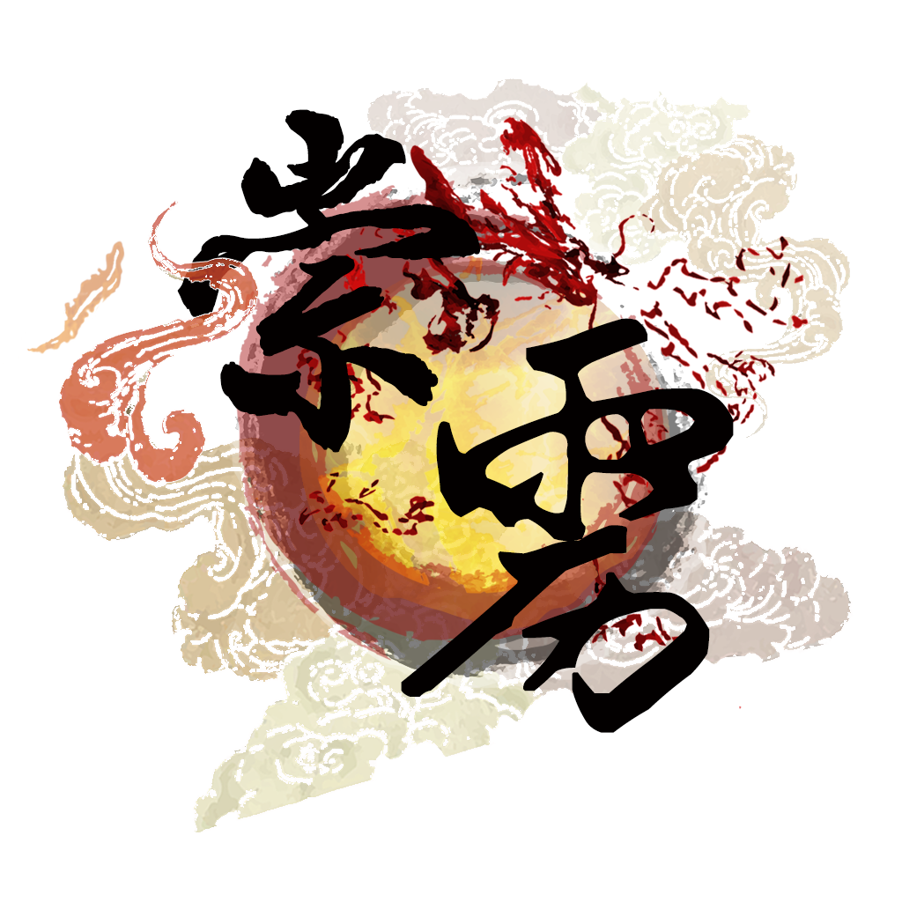

香港中文大學崇基學院內地生聯會
首頁
「崇靂」會徽

「崇靂」莊名含義
崇:「崇」字顯而易見，取自「崇基」，展現CCMSA致力於為崇基學院內地生服務，與校方溝通的 初心。
靂:「靂」字的簡體「雳」共十二畫，代表著CCMSA第十二屆幹事會。同時， 「靂」也象徵我們辦事的雷厲風行。此外，「靂」可拆為「雨」和 「歷」兩部分，寓意著不管風雨，崇靂都將和會員共同經歷。
「崇靂」成員
會長 鄭惟嘉 MIEG/2
副會長 曾嘉 QFIN/2
文書 周聞曉 BSSC/1
財政 華柯瀅 QFIN/2
總務 紀屹 CSCI/2
資訊 郭明蔚 BSCI/1
宣傳 呂可欣 PACC/1
執委 畢爾舜隆 ENGG/1
執委 蔡文翰 RMSC/2
執委 陳俞霖 PACC/2
執委 王晨 BSCI/1
執委 王萌瀟 PACC/2
會長 鄭惟嘉